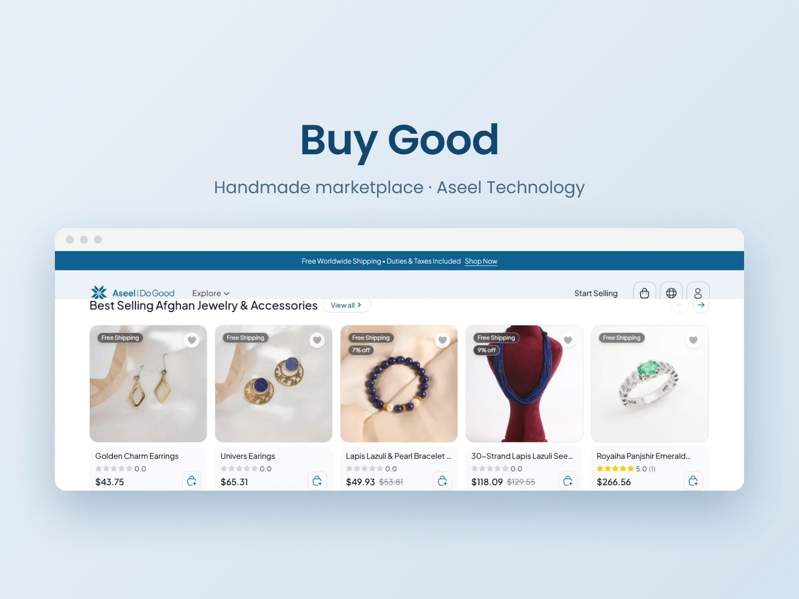

Buy Good marketplace · Aseel, 2025Cover story · p. 04
The marketplace for makers
How a product team set out to connect artisans in underserved communities with buyers around the world.
As Product Manager for Buy Good, Sameer leads the product end to end: user research with sellers and buyers, UX and UI audits, and a roadmap aligned with Aseel's goals.
Before that, as UI/UX designer, he redesigned the Sell Good platform and the seller landing page, keeping the design system consistent and accessible.
Side project · p. 08
Tikko, in Persian
A family to-do app designed right-to-left from day one, where green means one thing only: done.
One person in the household assigns recurring daily tasks; everyone else ticks them off in a simple “today” view, with streaks and stats to keep it fun. Built as a PWA with Next.js and Supabase.
 Tikko · mobile PWA, 2026
Tikko · mobile PWA, 2026Letters · p. 12
Kind words
 Rod A. McLeod · Publisher
Rod A. McLeod · Publisher